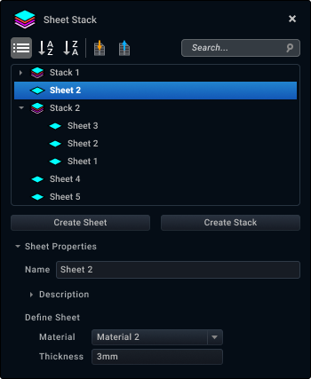
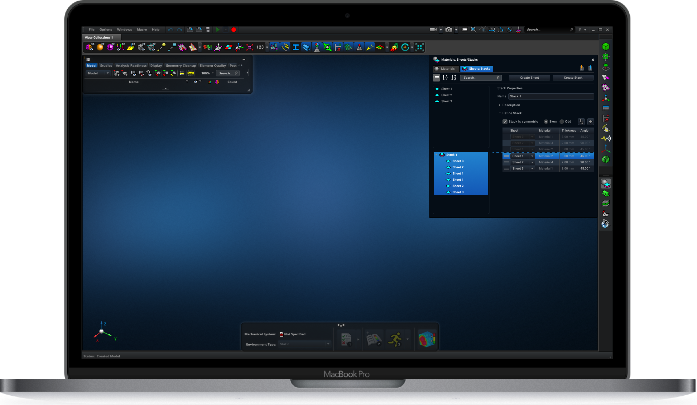

Overview
It is a common workflow for an FEA engineer to apply a ply or a specific combination of plies to multiple regions of a model. Apex supports definition and application of individual plies, however the user cannot reuse them to apply to different regions.
The Sheet Stack catalog enhances the current Apex composite capabilities by adding support for definition of named ply packs, which are specific combination of plies, as well as application of these ply packs to multiple regions of the model.
This capability greatly improves the usability and throughput of users who are defining composite structures.
Problem
Apex supports definition of composite layups. However, a limitation of the current implementation is that each ply must be manually defined, and it cannot be reused. In practice, it is common for a specific combination of plies, which we refer to here as a ‘ply pack’, to be used in multiple regions of a model.
The lack of this capability causes users to spend a lot of time defining and re-defining the same plies, which makes the composite layup building process inefficient and error-prone.
Roles and Responsibilities
As the sole UI/UX designer of this project, I worked closely with the field experts to understand the driving use cases, created high fidelity mockups and clickable prototypes, iterated on the design based on the feedback from the field experts, and worked closely with the development team to complete this project successfully.
Process
Research
Gather use cases from the customer and understand the workflow
Ideation with the team
Compare different design ideas and identify pros and cons of each idea

Design
Create mockups and clickable prototype

Customer feedback
Share design with customers and get feedback through discussions

Iterate
Based on customer feedback, update the design and get feedback (repeat as necessary)
Design specification
Document design details, define performance expectations, and provide assets

Conceptualize with development teams
Review the design specification with development teams and identify/address constraints

Support development
Provide clarifications to development teams until implementation is complete
Driving Use Cases
Based on meetings with field experts and stakeholders, I identified the following driving use cases for this project:
- Create reusable plies and ply packs
- Easily organize and order plies in a ply pack
- Import and export ply and ply pack properties
Brainstorming
Version 1
In this version, sheets and stacks are listed in a single list without any separation between them.
Issues
- Difficult to differentiate between stacks and sheets in the list
- Poor organization
Version 2
In this version, sheets and stacks are listed in a single list, but sheets are listed first, and then stacks are listed.
Issues
- User has to scroll a lot to browse the list (typical users create somewhere around 50 sheets and stacks)
Version 3
In this version, sheets and stacks are listed in separate lists.
Issues
- Based on the discussion with the team, we decided that it would make more sense to combine this catalog with another existing catalog to support a more complete workflow. More information on this in the Solution section.
Clickable Prototype
Next, I created clickable prototype to demonstrate the workflow of creating sheets and stacks in the catalog, as well as using them in an existing tool to build composite layups.
Solution
The solution we decided to implement gives users the ability to create a catalog of reusable sheets and stacks, which can be used to build composite layups.
This will significantly reduce the time users spend building a composite layup by removing the duplicate work. It will also reduce errors that might arise from manually building each ply and ply pack in the composite layup and ensure consistency across different composite layups.
Overview of Sheet Stack catalog design
- There are two catalogs supported in this tool panel. First is the Materials catalog, which already exists in the application, and second is the new Sheet Stack catalog. To define a sheet, the user must define its material. For this reason, the two catalogs are placed within the same panel.
- The user can import and export sheet/stack properties in a MatML file, which is an extensible markup language (XML) developed especially for the interchange of materials information.
Note: A composite material is a combination of two materials with different physical and chemical properties. - The user can sort the sheet and stack lists by the added date, alphabetically, or reverse-alphabetically. In the future, if there is a need to support independent sorting for each list, we can enhance this feature.
- The user can search for a specific sheet or stack.
- The user can click the button to create a sheet or stack.
- This is the list of sheets in the catalog. This list appears above the stacks list because the user first creates sheets and uses them to build stacks. A stack alone does not have properties - it is simply an ordered group of sheets.
- This is the list of stacks in the catalog.
- This section displays the properties of the selected sheet or stack in the list. The user can edit properties in this section.
Below are some of the key features in the design that address the driving use cases of this project.
KEY FEATURE 1 - Create reusable sheets and stacks in the catalog
A sheet is defined by a material and a thickness. In Apex, materials are defined in the Materials catalog. This is the reason that the design evolved to include both catalogs in a single tool panel instead of having two separate panels.
When creating a new sheet, the user can modify its name, select a material from the Materials catalog (all of the materials in the catalog are listed in the dropdown), and define the thickness.
A stack is defined by one or more sheets. In the real world, an engineer builds a stack of sheets by laying one sheet at a time on a flat surface. This UI resembles that workflow -- as the user adds a sheet to the stack, the datagrid will display the first sheet at the bottom and the last sheet at the top.
For each row in the datagrid, the user can select a sheet from the dropdown, which displays the list of available sheets. The material and thickness information comes from the sheet, so they’re greyed out.
For each row in the datagrid, the user can define the angle at which to lay the sheet.
Unlike in the real world, the user can easily change the order of sheets in a stack by dragging/dropping a row. This allows users to easily modify the order, which makes the building process convenient for the user.
KEY FEATURE 2 - Create symmetric stacks
It is very common for engineers to build symmetric stacks. Rather than manually building a symmetric stack by adding sheets symmetrically, the user can check the ‘symmetric’ checkbox, which causes the system to automatically copy and paste sheets (in the reverse order). The user can define whether the symmetric stack has an even or odd number of sheets, and based on the selection, the datagrid will automatically update.
A symmetry line (dotted blue line) will be displayed when a stack is marked symmetric. This allows the user to easily determine whether the symmetry is built correctly.
If the order of the sheets is incorrect, then the user can easily drag and drop the datagrid row, and the order of the rest of the sheets will be adjusted to ensure that the stack remains symmetric.
Reflection
During the research phase of this project, I reached out to the field experts to understand the use cases and get feedback on the initial designs. I learned a lot about what the different terms meant in the physical world as well as the workflow of creating composite layups. This was immensely helpful because I was able to think about what the user would do in each step of the workflow and identify areas of improvement. For example, in the initial designs, I did not include the Materials catalog and Sheet Stack catalog in the same panel. But in the final version, I modified the design such that they are displayed within the same panel -- this would better support the workflow of an engineer who is going through the entire process of creating a composite layup. When I went back to the field experts to get feedback on this design, they agreed that this aligns with the overall workflow and that it helps the users discover the new catalog, since the Materials catalog is a very frequently used tool in the application.